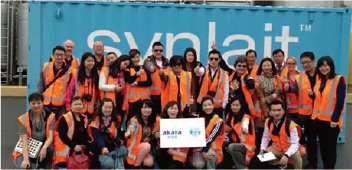

整合优势产业带资源
澳洲

澳大利亚
新希望集团发起“中澳农业与食品安全百年合作计划”
2014年，新希望集团刘永好董事长与澳大利亚知名企业家安德鲁·弗瑞斯特(Andrew Forrest)先生联合发起“中澳农业及食品安全百年合作计划”（简称ASA100），旨在进一步促进中澳两国在农业基础设施建设、农产品贸易、食品安全、农业产业链合作等方面的互利互补。澳大利亚当地时间2014年11月17日下午，在中国国家主席习近平和澳大利亚联邦政府总理阿博特共同见证下，《中澳企业间农业与食品安全百年合作计划谅解备忘录》在堪培拉正式签署。
中澳农业与食品安全百年合作计划（ASA100）是中澳间的联合非盈利性组织，作为一个民间的、长期的、稳定的、市场化的中澳农业与食品领域贸易、投资与合作平台，得到两国政府的大力支持。中澳农业与食品安全百年合作计划（ASA100）由中澳双方各30至50家有志于在农业持续发展、食品安全保障，以及跨境农业合作等领域长足思考的大型农业产业化集团以及涉农金融机构参与，中方成员包括新希望集团、中粮集团、汇源集团、联想控股佳沃集团、北大荒集团等。
双方合作的主要领域：一是在澳大利亚基于环境可持续发展的土地资源开发及作物生产、畜牧业生产及畜产品加工、经济作物产品开发、近海海产养殖及远洋渔业、特色食品加工等领域；二是在中国包括农产品物流与供应链管理、有机农产品生产示范、安全食品生产技术推广、农产品销售等领域。
-
草根知本收购澳大利亚著名保健品牌ANC
为了迎合国内保健品市场的特点和国民对保健品消费升级的要求，2016年6月底，新希望集团旗下的草根知本集团全资并购拥有27年品牌历史的澳大利亚保健品品牌ANC，这也是新希望集团在高端健康食品、健康医疗领域海外战略布局的重要一环。Australian NaturalCare Pty Ltd.成立于1989年，主要经营维生素，膳食补充剂，天然生活用品等产品。ANC目前自主品牌119个产品，其天然、无污染、无化学残留的品质，均获得澳洲政府TGA审批。并购后，会继续彻底的保持ANC产品的“原汁原味”。管理层人员全部沿用澳大利亚当地团队，产品生产方面坚持产品的原产地生产，选择最优质的原料和最先进的制作工艺。ANC的收购表明新希望集团在海外战略上迈出的新一步，正式进入营养健康领域。
-
新希望乳业投建澳大利亚鲜奶控股有限公司
澳大利亚当地时间2015年7月30日，新希望乳业与Moxey家族、Perich集团及澳大利亚自由食品集团，合资成立了“澳大利亚鲜奶控股有限公司”（Australian Fresh Milk Holdings PTY LTD.），其中，新希望乳业持最大股份。合资公司以奶牛规模化、专业化养殖产业为基础，并将在该领域的产业链上下游进行投资。根据协议，澳大利亚鲜奶控股可利用自由食品集团的加工产能和新希望乳业在亚洲的影响，进入中国和东南亚等市场，使澳大利亚鲜奶控股拥有了规模化的经营平台。新希望乳业通过上游投资，完善其“上游-加工-终端产品”的全产业链布局的重要举措。
-
新希望产业基金收购澳大利亚Kilcoy公司
2013年12月，新希望产业基金控股收购了澳大利亚第四大牛肉加工商Kilcoy畜牧业公司(简称KPC)。总投资额近5亿人民币。
KPC成立于1953年，位于昆士兰州阳光海岸基尔科伊镇(KILCOY)，现已发展成为澳大利亚最大的牛肉加工和出口商之一，拥有750多名员工，每年可加工逾260,000头谷饲牛。交易完成后，新希望集团保留了KPC的管理团队及员工，同时利用新希望优质的产业链资源帮助KPC丰富产品供应类型，拓展新的销售渠道，提高市场占有率。
新希望地产携手VIMG共建悉尼新地标Landmark。
2015年，新希望地产与合作伙伴VIMG集团通过三轮竞标，从24家参拍企业中脱颖而出，以总价约1.5亿澳币竞得位于澳大利亚新南威尔士州南部StLeonards的一块土地。该地块将建成北览Chatswood、南阅Harbour Bridge的43至53层的地标性建筑，为当地提供500余套优质住宅及商办空间，该建筑体量在当地属于大型房地产项目，预计总投资近6亿澳币。此次竞得地块所在的St Leonards位于悉尼北岸，处于悉尼城市战略的全球经济走廊带上，为悉尼传统富人区及高端住宅区。
新希望地产此番首次出海在澳大利亚完成土地投资，不仅为未来的海外投资奠定了基础，同时，这也是新希望集团继农牧、乳业两大板块之后，再次拓宽在澳投资领域
新西兰
-
新希望集团入股新西兰农业服务公司PGG Wrightson
2011年3月，新希望集团联合华奥物种，50.1%控股新西兰农业服务公司PGG Wrightson，该交易涉及金额约2亿美元。PGG Wrightson是新西兰最大的农业服务公司，主要经营农资、畜牧业等，其草种业务位居南半球第一。这对新希望而言，意味着将往产业链上端又推进了一步。整个动物饲料的核心是蛋白质质量，草是其重要构成之一。PGG Wrightson的草种科技含量较高，将帮助其提高蛋白质含量，对新希望集团中长期发展将有很大的战略意义。
-
新希望乳业与新西兰皇家农科院达成战略合作
2015年5月6日，新希望乳业与新西兰皇家农科院在新西兰汉密尔顿花园签署战略合作协议，双方在乳业健康与营养方面初步达成4个方向的合作。
双方四个合作方向分别是：中国消费者蛋白过敏体质研究、加热处理对乳制品营养价值的影响研究、婴幼儿奶粉的研究、无添加及功能性乳品的研发等。其中，对中国消费者蛋白过敏体质的研究，将解决喝牛奶过敏人群的困扰。加热处理对乳制品营养价值的影响研究，则将提升健康好奶标准，推动中国消费者低温鲜奶的健康消费习惯。而皇家农科院多年来在婴幼儿配方奶粉研究方面享有丰富的研究成果，长期为多家国际知名乳业提供技术支持，此次合作也将推动新希望乳业的婴幼儿奶粉产品迈上新台阶。接下来，双方还将共同建立联合实验室，培养国际化专业化的人才队伍，开展更广泛的技术合作。
新希望乳业与新西兰皇家农科院在科研方面的合作不仅将进一步提升新希望乳业的乳品营养与健康研究的技术研发水平，与国际标准接轨。也将推动中国乳品市场向更健康科学的方向迈进。 -
新希望乳业推出新西兰全进口婴幼儿配方奶粉akara
2013年11月，新希望乳业旗下企业四川新希望营养制品有限公司推出其在新西兰投资生产的全进口婴幼儿配方奶粉akara（爱瑞嘉），所有奶粉均由新西兰上市企业Synlait Milk Limited（新莱特乳业）生产。新莱特乳业是新西兰五家独立牛奶加工商之一，于2005年在新西兰坎特伯雷地区正式成立，并于2013年7月下旬在新西兰证券交易所主板挂牌上市。
新莱特乳业负责婴幼儿配方奶粉的研发和生产。同时，新希望营养品则持有爱瑞嘉系列婴幼儿配方奶粉的所有权，并负责产品在中国的渠道管理和销售。